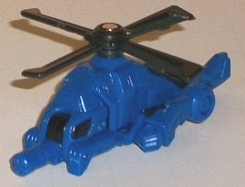
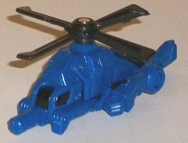

Difficulty of Transformations : Very Easy
Color Scheme : Dark blue, black, and some dull metallic greenish gold, and light pale red
Individual Rating : 5.4
Allegiances:
Autobot
Size
: Legends 2-pack
 Blazemaster
Blazemaster

Difficulty of Transformations
: Very
Easy
Color Scheme
: Dark blue, black,
and some dull metallic greenish gold, and light pale red
Individual Rating
: 5.4
Blazemaster is a partial
homage to the rather obscure G1 Micromaster of the same name. Like G1 Blazemaster,
this version of the character is a little bitty helicopter and is primarily
blue and gold, though the amounts of both colors have been flipped on this
release (possibly to differentiate him more visually from Bumblebee). In
vehicle mode, he's almost entirely dark blue, with a bit of black for the
windows and rotors-- in other words, he's not all that impressive when
it comes to his color scheme here. His mold detailing is quite detailed,
though some of the mold details don't fit quite well proportionally with
the figure-- for example, his cockpit window details are prety ridiculously
small. Beyond the black windows, there's no paint details here beyond just
a touch of gold on the underside of the tail. I do love the little gun-peg
that sticks out the front of the mode, giving Blazemaster some creative
firepower even in this mode. His rotor also spins very well. The biggest
issue with this mode is easily that Blazemaster's robot arms just sorta
out there on the sides, without any real attempt to hide them. Granted,
given how tiny this toy is, it's much more acceptable than if it was larger,
but still, it's hard to ignore.
Blazemaster's transformation
to weapon mode (seen below) consists mostly of rotating the bottom half
of the helicopter mode back and flipping the tail up to expose the gold
cannon at the front of this mode. Unfortunately, the robot arms are still
really obvious on the sides of this mode, but that's about its only real
downside. The gold paint highlights the cannon barrel and the "laser targeter"
very well, and his vehicle-gun becomes a pretty solid handle for the larger
Generations Legends partners to hold him by. Blazemaster's helicopter blade
comes off in this mode, and can be plugged into another 5mm port of one
of said larger Generations Legends figures, as a sort of slicer-weapon--
making Blazemaster two weapons in one! It's a pretty neat idea, though
if you want to store the rotor on the top of this mode, it doesn't fit
in securely due to how the tail section rotates back, and it can get in
the way of figures holding him a bit, while also screwing up the otherwise
pretty solid blaster silouhette-- so you're better off just leaving the
rotor separate in weapon mode.
The transformation to
robot mode for Blazemaster simply means standing him up on his front end,
folding his weapon-peg in, and then rotating his tailpiece back to reveal
his face. The gold paint down the center of this mode gives him a bit more
visual interest, though the fact that his weapon cannon barrel is pointing
DIRECTLY
at his head is a bit... odd. Like in vehicle mode, some his mold details
are a bit mis-proportioned, such as overly skinny legs and a face that
seems a bit squished and not up to par of the rest of the mold detailing
on the toy (the light red band of paint across his visor is certainly appreciated
to help distinguish it, though). His rotor simply hangs behind his back
in this mode, as does his tail, but at this small of a scale neither are
huge issues. He's quite stable, and his points of articulation are back-and-forth
at the shoulders-- again, nothing to write home about, but this is one
tiny figure so you can't expect too much. His fist holes are sized to hold
Cyberverse-scaled weapons, which is a nice touch.
Blazemaster's main downside
is that his robot arms are patently obvious in any mode. However, that
aside, his vehicle and especially his weapon modes are quite good for the
scale (though his robot mode is pretty ennnh). Given his ability to separate
into two different weapons what with the rotor and all, he's one of my
favorite "teeny tiny" partners for the Generations Legends 2-packs.
 Bumblebee
Bumblebee
Difficulty of Transformation
: Easy
Color Scheme
: Milky yellow, black,
and some silver, metallic gunmetal gray, light metallic silvery blue, and
very light red
Individual Rating
: 7.7
Bumblebee's vehicle mode
this time around is about halfway between the futuristic, bulbous TRON-like
vehicle of his
"War for Cybertron"
version
and a more normal, realistic sportscar. It's a rather interesting combination,
and one that I'm not entirely sure works just because it treads that line
where it's neither realistic-looking nor "legitimately" futuristic like
a Cybertronian alt mode-- I mean, he has an obvious Earth-like spoiler,
headlights and taillights, a front grill, identifiable car doors, etc.,
but he's way too curvy and sloped to be realistic. The cockpit windows
are rather overly large, but I suppose that's to make Bumblebee look a
bit "cuter" given his general G1 personality. For the most part, he has
no robot parts readily visible in this mode. The sole exception to this
is the back end, where you can see Bumblebee's chest, which doesn't line
up with his back taillight pieces, in a rather odd discrepancy. The mold
detailing on 'Bee is pretty minimal here, given the semi-futuristic look
of this mode, but the necessary details are here, like the aforementioned
grill, headlights and taillights, windows, and the like. As I'm sure you're
familiar with by now, Bumblebee's color scheme is mostly yellow with some
black, with the yellow being more dominant in this mode. It's a fairly
"average" shade of yellow, being neither particularly metallic and eye-catching
nor overly bright and obnoxious. You probably know by now whether you like
the yellow/black color scheme, and this toy's not going to change anyone's
mind in that respect. There's a couple of metallic gunmetal gray paint
apps on the front end, which contrast against the yellow well (as do the
black windows), but there's a couple of quite light red stripes down his
front hood and on his backside (both for his taillights and his robot chest)
that simply don't look all that great against an already light color scheme--
there's not enough contrast, there. Still, at least Bumblebee isn't wanting
for paint apps here, between his windows and his lights all painted. Bumblebee
has a hole on the top of this mode to hold either his buddy Blazemaster
or another similar-sized partner or 5mm peg weapon.
Bumblebee's transformation
almost entirely consists of simply separating out his vehicle mode pieces,
though his arms do a neat little bit of folding. The result is-- oddly
enough-- a robot mode that is almost a dead ringer for his "War for Cybertron"
robot mode, despite the vehicle mode being a bit different. The only really
"non-WfC" details here are the lack of wheels on his legs and the spoiler/window
piece backpack (it doesn't get in the way of movement, thankfully, though
it does stick out a little from Bumblebee's otherwise round body). I largely
liked Bumblebee's "Cybertronian" robot mode, and that carries over here
as well. His lower arms may be a tad meaty for Bumblebee, but otherwise
proportionally he fits the "little guy/scout" bit quite well, with a generally
amiable (and well-detailed) face, a round body to make him look less threatening,
and curved shoulders and legs. Besides his head, though, I do wish that
he had more detailing in this mode (both in terms of paint and of the mold
itself); the increased amount of black plastic compared to the yellow helps
a bit more with visual contrast, but it can only do so much. Some little
details like springs or whatnot around his waist or robot "innards" would've
helped make him more visually interesting, here. For articulation, Bumblebee
can move at the shoulders (at two points), elbows, hips, knees, and slightly
forward at the ankles. It's pretty decent articulation for a toy of this
size, and most of these joints are ball joints, so he can pull off some
pretty nice poses. I do wish his feet were a little larger to keep him
more stable, though, and another small caveat is that his arms are actually
in front of his shoulders, so if you lift up his arms to point forward
it does look a little weird. As you'd expect his hands are sculpted so
that he can hold Blazemaster or other Generations Legends 2-pack partners--
and Blazemaster's rotor weapon can fit into the center of the tire on either
of his forearms, giving that extra weapon piece a nice little place to
fit, too.
"Legends" Bumblebee
is an odd mix of his G1 and WfC bodies, having a robot mode that's a pretty
decent recreation of his WfC self with a few minor caveats but a car that
doesn't really look quite... right, particularly in the back. His been-there-done-that
color scheme and lack of mold detailing also don't help him at all-- an
okay Legends mold, but not among the best out of the Generations line.
The Bumblebee/Blazemaster 2-pack is roughly middle-of-the-road as far as the Generations Legends packs go. Blazemaster has a blah robot mode, but his weapon and helicopter modes are great for the tiny size; Bumblebee is pretty much the other way around (without the weapon mode, of course), though even his vehicle mode is decent enough, it's just an odd mix of aesthetics. The colors on both aren't particularly catchy, though, so you may want to wait for the Cliffjumper redeco to pick up this mold if you only want one version.
Reviews by Beastbot